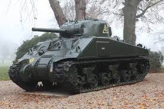

Prior to the entry of the United States into the war after the attack on Pearl Harbor in December 1941, the Army had only a few tanks. During the Louisiana Maneuvers in September 1941, it used trucks with the word "tank" painted on their side. Even after Pearl Harbor the 10th Armored Division did not have any tanks, so crews trained by marching down roads in groups and executing orders as if they were in tanks.
These are the most famous tanks of the United States:

This is the M4 Sherman
The M4 Sherman, officially Medium Tank, M4, was the most widely used medium tank by the United States and Western Allies in World War II. The M4 Sherman proved to be reliable, relatively cheap to produce, and available in great numbers. Thousands were distributed through the Lend-Lease program to the British Commonwealth and Soviet Union. The tank was named by the British for the American Civil War General William Tecumseh Sherman. The tank had a maximum armor thickness of 177,8mm and a minimum armorthickness of 12,7mm depending on the variant. The early variants was equipped with a 75mm gun M3 while the later variants was equipped with a 76,2mm gun M1. The early variants had a Continental R975-C1 or -C4 9 cylinder radial gasoline engine while the later variants had a Ford GAA V8 gasoline engine making it possible for the tank to go at 22–30 mph (35–48 km/h) on road, depending upon variant.
(Work in progress!)